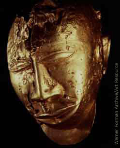

All pieces of native gold found in the mines of the empire belong to the sovereign, although he lets the public have the gold dust that everybody knows about. Without this precaution, gold would become so abundant as practically to lose its value.
When a man is accused of denying a crime, a headman takes a thin piece of wood, which is sour and bitter to taste, and pours upon it some water which he then gives to the defendant to drink. If the man vomits, his innocence is recognized and he is congratulated. If he does not vomit and the drink remains in his stomach, the accusation is accepted as justified.